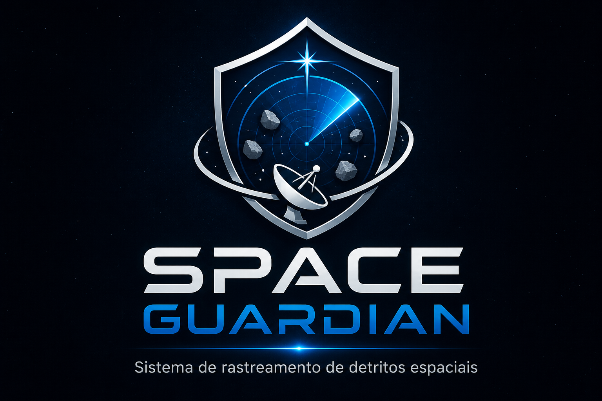

⚠️ Rota de Colisão Evitada
Crítico - 14:32O satélite de comunicação BR-SAT precisou realizar manobra evasiva consumindo 2% de combustível devido a um fragmento de tamanho médio não catalogado.

Histórico das últimas 24 horas no setor monitorado.
O satélite de comunicação BR-SAT precisou realizar manobra evasiva consumindo 2% de combustível devido a um fragmento de tamanho médio não catalogado.
Todos os sistemas operando dentro da normalidade. Varredura do setor B-4 concluída sem novas detecções.
Anomalia magnética detectada. Recomendado colocar sensores óticos em modo de segurança nas próximas 6 horas.